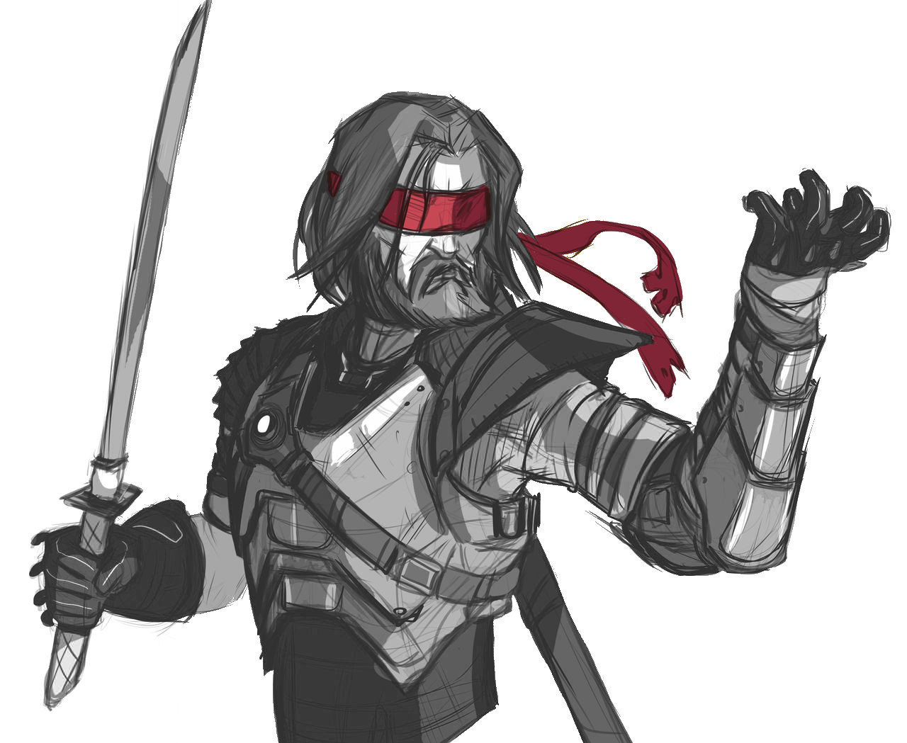

Une situation de départ pour Psi*Run inspirée de The Boys.
(mais ne le mentionnez pas à vos joueurs !)

Tous les Fugitifs étaient auparavant des super-héros ultra puissants, extrêmement médiatiques, mais aussi secrètement d'horribles ordures, ayant commis les pires atrocités amorales. Ils étaient connus comme Les Implacables et étaient soutenus par la méga-corporation Vault Tech.
Un petit groupe de psis s'est rassemblé en une organisation secrète nommée Mankind Justice pour mettre fin à leurs agissements cruels.
Aujourd'hui, ils ont ont tendu un piège aux Implacables dans un cargo abandonné dans le port de la ville, où ils avaient rassemblé de quoi affaiblir leurs pouvoirs. Leur chef, Mad Jack, les a affronté mais, sentant la situation lui échapper, s'est sacrifié en poussant au maximum sa capacité psi, rendant amnésiques les Implacables et provoquant une explosion.
Amnésiques, les Fugitifs ont oublié qu'ils ont le support des médias et de Vault Tech; et comme la plupart de leurs identités étaient secrètes, sans leurs costumes ils ne sont pas reconnus par leurs partisans.
Tandis que les joueuses inventent leurs personnages, essayez de répondre à ces questions, en répartissant les réponses entre les Fugitifs :
Vous répondrez ensemble durant la partie aux questions sans réponses.
New Seattle, 2048. Les Fugitifs reprennent conscience à l'intérieur d'un gigantesque cargo qui prend l'eau rapidement. Une explosion semble avoir percé la coque, et brûlé leurs vêtements. Certains Fugitifs sont entravés par de lourdes chaînes, des conteneurs de marchandise menacent de les écraser alors que le navire bascule, et un cadavre flotte à proximité, avec comme seul signe distinctif « MJ » tracé en rouge sur son t-shirt blanc...
Dans les poches des Fugitifs : les clefs d'un coffre de banque; un plan des égouts avec une croix; une télécommande activant le Dog-signal de la tour Vault; une carte bancaire Vault aux provisions infinies.

Ces psis hors-la-loi se relaient pour traquer les Fugitifs. Face à eux, ils clameront leur soif de vengeance pour Mad Jack / Mankind Justice, et refuseront tout dialogue.
Cette ancienne super-héroïne s'est vue torturée et défigurée par l'un des Implacables. Sniper d'élite, elle a aussi la capacité de commander aux animaux. Elle enverra sur les Fugitifs des hordes de mouettes, de requins, de rongeurs... Vaincue, on trouvera sur elle un article NS News de Jonah Madison où la mention du tribunal abandonné est surlignée...

Capable de se régénérer à l'infini, BikerMan a servi de punching-ball à l'un des Implacables durant des années. Il a survécu, mais ses cordes vocales ne fonctionnent plus, et il compte bien se venger.

Ancien sidekick d'un Implacable, il peut se dupliquer des dizaines de fois. Il a été traumatisé de découvrir que son partenaire faisait parfois subir des sévices à ses doubles éphémères. Son identité civile est celle du reporter Jonah Madison. Face aux Fugitifs, il se dédoublera en une véritable armée, et les bombardera de shurikens.
Compagnon de Mad Jack dans la vie, Thorgal est une version ninja cybernétique de Daredevil qui voue désormais une haine personnelle aux Fugitifs : tant qu'il respire, il les traquera pour les éliminer.

Durant leur fuite, les Fugitifs entendront un peu partout à la radio un chroniqueur de NS News commenter l'actualité :
Les Fugitifs renoueront ils avec leur passé, ou s'en affranchiront-ils ?
Bande son : Spider-Man, City of Heroes, Vampire TM: Bloodlines, Persona. Inspirations : Paranormal (Christensen), Powers (Bendis & Deming), les comics de Paul Pope, Suicide Squad, le trope Beware the Superman.